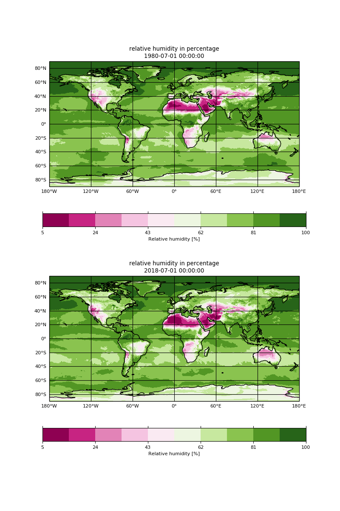

Getting your hands-on climate data
 Anne Fouilloux
Anne Fouilloux
Overview
question Questionsobjectives Objectives
What is climate?
What type of data is available?
requirements Requirements
Learn about the terminology
Learn about the different source of climate data
Learn about climate observations, reanalysis, climate predictions and climate projections
time Time estimation: 1 hour
Supporting Materials
last_modification Last modification: Jan 6, 2021
Introduction
comment Comment
This tutorial is significantly based on Getting your hands-on Climate data.
The practical aims at familiarzing you with Climate Science and the terminology used by climate scientists. The target audience is not a climate scientist but anyone interested in learning about climate.
Agenda
In this tutorial, we will cover:
comment Background
European Copernicus Climate Change Service (C3S) provide authoritative information about the past, present and future climate. C3S is one of the many services provided by Copernicus, the European Union’s Earth Observation Programme, looking at our planet and its environment for the ultimate benefit of all European citizens. The C3S Climate Data Store (CDS) provides a single point of access to a wide range of quality-assured climate datasets distributed in the cloud. Access to the CDS data is open, free and unrestricted. We will be using freely available datasets from the CDS, including observations, historical climate data records, estimates of Essential Climate Variables (ECVs) derived from Earth observations, global and regional climate reanalyses of past observations, seasonal forecasts and climate projections.
For the purpose of this tutorial, sample datasets have been created from data downloaded from C3S through Copernicus Climate Data Store:
- E-OBS daily gridded meteorological data for Europe from 1950 to present derived from in-situ observations
- Essential climate variables for assessment of climate variability from 1979 to present
To reduce the volume of data, the data resolution (in space and/or time) has been significantly reduced and/or data has been selected on sample locations (Paris, Oslo and Freiburg). The data format may also have been changed (for instance to tabular) to ease processing.
Get data
hands_on Hands-on: Data upload
- Create a new history for this tutorial. If you are not inspired, you can name it climate101.
tip Tip: Creating a new history
Click the new-history icon at the top of the history panel
If the new-history is missing:
- Click on the galaxy-gear icon (History options) on the top of the history panel
- Select the option Create New from the menu
Import the files from Zenodo or from the shared data library
https://zenodo.org/record/3776500/files/tg_ens_mean_0.1deg_reg_v20.0e_Paris_daily.csv https://zenodo.org/record/3776500/files/ts_cities.csvtip Tip: Importing data via links
- Copy the link location
Open the Galaxy Upload Manager (galaxy-upload on the top-right of the tool panel)
- Select Paste/Fetch Data
Paste the link into the text field
Press Start
- Close the window
By default, Galaxy uses the URL as the name, so rename the files with a more useful name.
tip Tip: Importing data from a data library
As an alternative to uploading the data from a URL or your computer, the files may also have been made available from a shared data library:
Go into Shared data (top panel) then Data libraries
Find the correct folder (ask your instructor)
- Select the desired files
- Click on the To History button near the top and select as Datasets from the dropdown menu
- In the pop-up window, select the history you want to import the files to (or create a new one)
- Click on Import
Check that the datatype is tabular
tip Tip: Changing the datatype
- Click on the galaxy-pencil pencil icon for the dataset to edit its attributes
- In the central panel, click on the galaxy-chart-select-data Datatypes tab on the top
- Select
datatypes- Click the Change datatype button
If it is not
tabularmake sure to convert it using the Galaxy built-in format converters.tip Tip: Converting the file format
- Click on the galaxy-pencil pencil icon for the dataset to edit its attributes
- In the central panel, click on the galaxy-gear Convert tab on the top
- Select
Convert CSV to Tabular- Click the Convert datatype button
Rename Datasets
As “
https://zenodo.org/record/3776500/files/tg_ens_mean_0.1deg_reg_v20.0e_Paris_daily.csv†is not a beautiful name and can give errors for some tools, it is a good practice to change the dataset name by something more meaningfull. For example by removinghttps://zenodo.org/record/3776500/files/to obtaintg_ens_mean_0.1deg_reg_v20.0e_Paris_daily.csvandts_cities.csv, respectively.tip Tip: Renaming a dataset
- Click on the galaxy-pencil pencil icon for the dataset to edit its attributes
- In the central panel, change the Name field
- Click the Save button
Add a tag to the dataset corresponding to
copernicustip Tip: Adding a tag
- Click on the dataset
- Click on galaxy-tags Edit dataset tags
Add a tag starting with
#Tags starting with
#will be automatically propagated to the outputs of tools using this dataset.- Check that the tag is appearing below the dataset name
What is climate?
According to wikipedia, Climate is defined as the average state of everyday’s weather condition over a period of 30 years. It is measured by assessing the patterns of variation in temperature, humidity, atmospheric pressure, wind, precipitation, atmospheric particle count and other meteorological variables in a given region over a long period of time (usually 20 or 30 years). Climate differs from weather, in that weather only describes the short-term conditions of these variables in a given region.
Climate versus Weather
Quantities that climate scientists are interested in are similar to those used to assess the weather (temperature, precipitation, etc.). But there is a big difference between climate and weather: weather varies from hour to hour and from day to day whereas climate is defined as the average of weather over several decades or longer.
The figure below shows a woman walking her dog and we can use it to make an analogy to illustrate the difference between weather and climate. if you focus your attention on the dog, you can see that it is all over the place, sometimes upwards, sometimes downwards: this can represent the weather and its variability. The dog (weather) is not following a fully random pattern and varies around a main direction (trend) that is given by the woman: the woman is representing the climate and gives us an indication of where both the woman and dog are likely to be in the future.

Source: Animated short introduction to statistics in climate research from Norwegian infotainment program Siffer. Produced by TeddyTV for NRK. Animation by Ole Christoffer Haga
You can also watch an animated illustration of the difference between climate and weather:
What is the weather like in Paris?
In order to answer this question, we are going to inspect and visualize the dataset tg_ens_mean_0.1deg_reg_v20.0e_Paris_daily.csv using simple galaxy tools.
hands_on Hands-on: Daily temperature time series
comment Tip: search for the tool
Many different tools can be used to answer to the questions. Here we give you some guidelines to help you to choose. Use the tools search box at the top of the tool panel to find Select lines that match an expression tool and Datamash tool.
question Questions
- What was the average temperature in Paris on the 14th of July 2003?
- What is the minimum and maximum temperatures in Paris?
- On which date did the minimum temperature occured?
- On which date did the maximum temperature occured?
solution Solution
- The average temperature in Paris on the 14th of July 2003 was 26.73 degrees Celcius. It can be found by using Select lines that match an expression tool with parameter “the pattern†set to 2003-07-14.
- The minimum temperature in Paris is -11.6799995 degrees celcius and the maximum temperature in Paris is 33.579998 degrees celcius. To find out, you can use Datamash tool with the following parameters:
- param-file “Input tabular dataset”:
tg_ens_mean_0.1deg_reg_v20.0e_Paris_daily.csv- “Input file has a header line”:
Yes- “Print header line”:
Yes- “Print all fields from input file”:
No- In “Operation to perform on each group”:
- param-repeat “Insert Operation to perform on each group”
- “Type”:
minimum- “On column”:
c2- param-repeat “Insert Operation to perform on each group”
- “Type”:
maximum- “On column”:
c2- The minimum temperature (-11.6799995 degrees celcius) was observed on January 16 1985. You can use different Galaxy tools to find out the solution and here we show you how to use Datamash tool with the following parameters:
- param-file “Input tabular dataset”:
tg_ens_mean_0.1deg_reg_v20.0e_Paris_daily.csv- “Input file has a header line”:
Yes- “Print header line”:
Yes- “Print all fields from input file”:
Yes- In “Operation to perform on each group”:
- param-repeat “Insert Operation to perform on each group”
- “Type”:
minimum- “On column”:
c2The maximum temperature (33.579998 degrees celcius) was observed on July 25 2019. For the maximum, repeat Datamash tool with the following parameters:
- param-file “Input tabular dataset”:
tg_ens_mean_0.1deg_reg_v20.0e_Paris_daily.csv- “Input file has a header line”:
Yes- “Print header line”:
Yes- “Print all fields from input file”:
Yes- In “Operation to perform on each group”:
- param-repeat “Insert Operation to perform on each group”
- “Type”:
maximum- “On column”:
c2
What is the climate in Paris?
To get some information about the (past and current) climate in Paris, we will first look at monthly averages.
Seasonality
hands_on Hands-on: What is the monthly climatological temperature in Paris?
To answer to this question, we will compute the global average temperatures over the entire period 1950 and 2019 for each month (January, February, etc.). Indeed, this period of time is sufficiently long for computing monthly climatological temperature (more than 30 years).
question Questions
- What is the warmest summer month e.g. between June, July and August (JJA) in Paris?
- What is the coolest winter month e.g. between December, January and February (DJF) in Paris?
solution Solution
- The warmest summer month in Paris is July (19.921018171429 degrees celcius). However, it is interesting to remark that on our dataset we see very little difference in the mean temperature between July and August.
The coolest winter month in Paris is January (4.4669169722484 degrees celcius).
Below, we show you how we found these results. We will first split all the dates (first column) from YYYY-MM-DD (where YYYY is the year, MM the month and DD the day) to three column to get 3 columns: one for the year, one for the month and one for the day. Use Text reformatting with awk tool with parameters:
- File to process:
tg_ens_mean_0.1deg_reg_v20.0e_Paris_daily.csv- AWK Program:
gsub(/-/,"\t",$1){$1=$1} {print}Rename the resulting file to
split_dates_Paris.csv.Then use Datamash tool with the following parameters:
- param-file “Input tabular dataset”:
split_dates_Paris.csv- “Group by fields”: 2
- “Input file has a header line”:
Yes- “Print header line”:
No- “Sort input”:
Yes- “Print all fields from input file”:
No- In “Operation to perform on each group”:
- param-repeat “Insert Operation to perform on each group”
- “Type”:
Mean- “On column”:
c4Rename the resulting file to
climatology_Paris.csv. Then use again Datamash to get the month where the minimum and maximum temperatures are found:
- param-file “Input tabular dataset”:
climatology_Paris.csv- “Group by fields”:
- “Input file has a header line”:
No- “Print header line”:
No- “Print all fields from input file”:
Yes- In “Operation to perform on each group”: - param-repeat “Insert Operation to perform on each group†- “Type”:
minimum- “On column”:c2Look at the resulting file and the first field will give you the month (07 e.g. July) where the maximum temperature is found.
For the maximum, repeat Datamash tool with the following parameters:
- param-file “Input tabular dataset”:
climatology_Paris.csv- “Group by fields”: ``
- “Input file has a header line”:
Yes- “Print header line”:
No- “Print all fields from input file”:
Yes- In “Operation to perform on each group”:
- param-repeat “Insert Operation to perform on each group”
- “Type”:
maximum- “On column”:
c2The result is in the first column of the resulting file which indicates
01e.g. January.Please note that you may use other Galaxy tools to reach the same results. Results can be slightly different when using different source of climate information. However, you will always observe the same pattern e.g. cool month in winter and warm month on summer. We can also clearly see that Paris has a mild climate with on average no extreme temperatures.
tip Tip: Using existing climatologies
In this tutorial, we compute manually the monthly climatological temperatures to explain you the algorithm used behing. However, many data providers have pre-computed climatologies and can be directly downloaded. For instance, on the CDS, climatologies are provided for Essential climate variables for assessment of climate variability from 1979 to present.
Yearly average
hands_on Hands-on: What is the trend (cooling/warming) in the climate for Paris between 1950 and 2019?
To answer to this question, we will compute yearly mean of the temperature in Paris and visualize it.
- Use Datamash tool with the following parameters:
- param-file “Input tabular dataset”:
split_dates_Paris.csv- “Group by fields”: 1
- “Input file has a header line”:
Yes- “Print header line”:
No- “Print all fields from input file”:
No- “Sort input”:
Yes- In “Operation to perform on each group”:
- param-repeat “Insert Operation to perform on each group†- “Type”:
Mean- “On column”:c4Rename the resulting file to
yearly_mean_Paris.csv.- To make a plot, you can use Scatterplot w ggplot2 tool with the following parameters:
- “Input in tabular format”:
yearly_mean_Paris.csv- “Column to plot on x-axis”: 1
- “Column to plot on y-axis”: 2
- “Plot title”: Yearly mean temperature in Paris from 1950 to 2019
- “Label for x axis”: Year (YYYY)
- “Label for y axis”: Temperature (degrees celcius)
- And finally in
Advanced OptionschangeType of plotto Points and Lines.- View galaxy-eye the resulting plot:
question Questions
Can we easily observe a trend?
solution Solution
The plot clearly shows a slight increase in the yearly mean temperature between 1950 and 2019. Even though it looks no more than a few degrees celcius, it is quite significant.

Anomalies
In climate change studies, temperature anomalies are more important than absolute temperature. A temperature anomaly is the difference from an average, or baseline, temperature. The baseline temperature is typically computed by averaging 30 or more years of temperature data. A positive anomaly indicates the observed temperature was warmer than the baseline, while a negative anomaly indicates the observed temperature was cooler than the baseline.
hands_on Hands-on: Climate stripes for Paris
Computing temperature anomalies is out of scope of this tutorial and we will therefore use pre-computed temperature anomalies
ts_cities.csv. A simple way to visualize anomalies and highlight cooling/warming over the years, is to use climate stripes from timeseries tool with the following parameters:
- “timeseries to plot”:
ts_cities.csv- “column name to use for plotting”:
tg_anomalies_paris- “plot title”:
Climate stripes for Paris (1950-2019)View galaxy-eye the resulting plot:
question Question: do you observe a warming or cooling between 1950 and 2019?
solution Solution
The climate stripes clearly show a warming between 1950 and 2019.

tip Tip: Copernicus Climate Bulletin
Copernicus Climate Bulletins presents the current condition of the climate using key climate change indicators. They also provide data, analysis of the maps and guidance on how they are produced. Datasets for temperature anomalies can be found and are regularly updated (with recent dates). For instance, in March 2020, the corresponding dataset can be found here.
Climate variables
Temperature is often the first variable that comes to mind when we talk about climate. However, it is insufficient to fully characterize the climate, and scientists have agreed on a number of variables to systematically observe Earth`s changing climate.
That is what we call Essential Climate Variables.
Essential Climate Variables
The Global Climate Observing System (GCOS) and its GCOS expert panels maintain definitions of Essential Climate Variables (ECVs).
GCOS is co-sponsored by the World Meteorological Organization (WMO), the Intergovernmental Oceanographic Commission of the United Nations Educational, Scientific and Cultural Organization (IOC-UNESCO), the United Nations Environment Programme (UN Environment), and the International Science Council (ISC). It regularly assesses the status of global climate observations of the atmosphere, land and ocean and produces guidance for its improvement.
At the moment, there are 54 ECVs.
Source: https://gcos.wmo.int/en/essential-climate-variables
hands_on Hands-on: Essential Climate Variables
We will look at the Water Vapor Essential Climate Variable : The humidity of air near the surface of the Earth affects the comfort and health of humans, livestock and wildlife, the swarming behaviour of insects and the occurrence of plant disease. The humidity of air near the surface affects evaporation and the strength of the hydrological and energy cycles. Evaporation from the surface of the earth is the source of water in the atmosphere and so is responsible for important feedbacks in the climate system due to clouds and radiation.
- Copernicus Essential Climate Variables tool with the following parameters:
- “Variable(s)”: surface_air_relative_humidity
- “Select type of data”: Monthly mean
- “Select year(s)”:
1980and2018- “Select month”:
JulyRename the resulting file torh_mean_july_1980_2018.nc- map plot gridded (lat/lon) netCDF data tool with the following parameters:
- “input with geographical coordinates (netCDF format)”:
rh_mean_july_1980_2018.nc- “variable name as given in the netCDF file”:
R- And finally in
Advanced Optionschange:
- “multiple times”:
Yes- “comma separated list of indexes for fields to plot”: 0,1
- “number of rows for subplot grid”: 2
- “subplot title (repeated on each subplot)”: relative humidity in percentage
- “colormap”: PiYG
- View galaxy-eye the resulting plot:

question Relative humidity
- Do you observe any significant changes relative humidity in France from 1979 to 2018?
- Do we have sufficient information to make any conclusions on the change in climate?
solution Solution
- We can see significant changes on the plot over France. The relative humidity of air near the surface of the Earth is lower in July 2018 than in July 1980.
- We do not have sufficient information to draw any conclusions about the change in climate. In our analysis, we only used two different months (July 1980 and July 2018) and can only discuss the average changes in weather during these two periods (July 1980 and July 2018). We learnt that to draw any conclusions on the climate, we would need to make statistics over a long period of time e.g. we would need to download about 30 years of data and for instance compute anomalies in relative humidity to check if there is any trend. These aspects will be discussed further in other Galaxy tutorials.
Past, present and future climate?
When we talk about climate data, the type of data can vary significantly. We have very little actual observations at the scale of climate and usually not covering a large area. In addition to observations, we can make use of:
- Re-analyses where observations and numerical modelling are combined together.
- Climate models.
Observations and re-analyses provide information about the past and current climate while climate models can provide past, current and future climate information. When it comes to future climate, we usually need to make some assumptions (such as how much CO2 emissions, etc.) and simulate different scenarios e.g. we run climate models using different assumptions and look at future trends under each of these scenarios: this is what we call climate projections. Climate projections will be discussed in a separate Galaxy tutorial.
Conclusion
We have learnt to differentiate climate from weather and got an overview of the terminology used by climate scientists to identify the various source of climate data.
keypoints Key points
Weather versus Climate
Essential Climate Variables
Observations, reanalysis, predictions and projections.
Feedback
Did you use this material as an instructor? Feel free to give us feedback on how it went.

Citing this Tutorial
- Anne Fouilloux, 2021 Getting your hands-on climate data (Galaxy Training Materials). /training-material/topics/climate/tutorials/climate-101/tutorial.html Online; accessed TODAY
- Batut et al., 2018 Community-Driven Data Analysis Training for Biology Cell Systems 10.1016/j.cels.2018.05.012
details BibTeX
@misc{climate-climate-101, author = "Anne Fouilloux", title = "Getting your hands-on climate data (Galaxy Training Materials)", year = "2021", month = "01", day = "06" url = "\url{/training-material/topics/climate/tutorials/climate-101/tutorial.html}", note = "[Online; accessed TODAY]" } @article{Batut_2018, doi = {10.1016/j.cels.2018.05.012}, url = {https://doi.org/10.1016%2Fj.cels.2018.05.012}, year = 2018, month = {jun}, publisher = {Elsevier {BV}}, volume = {6}, number = {6}, pages = {752--758.e1}, author = {B{\'{e}}r{\'{e}}nice Batut and Saskia Hiltemann and Andrea Bagnacani and Dannon Baker and Vivek Bhardwaj and Clemens Blank and Anthony Bretaudeau and Loraine Brillet-Gu{\'{e}}guen and Martin {\v{C}}ech and John Chilton and Dave Clements and Olivia Doppelt-Azeroual and Anika Erxleben and Mallory Ann Freeberg and Simon Gladman and Youri Hoogstrate and Hans-Rudolf Hotz and Torsten Houwaart and Pratik Jagtap and Delphine Larivi{\`{e}}re and Gildas Le Corguill{\'{e}} and Thomas Manke and Fabien Mareuil and Fidel Ram{\'{\i}}rez and Devon Ryan and Florian Christoph Sigloch and Nicola Soranzo and Joachim Wolff and Pavankumar Videm and Markus Wolfien and Aisanjiang Wubuli and Dilmurat Yusuf and James Taylor and Rolf Backofen and Anton Nekrutenko and Björn Grüning}, title = {Community-Driven Data Analysis Training for Biology}, journal = {Cell Systems} }